Planned Reconcile
This section allows you to count and update product quantities available in a store based on an existing reconciliation.
Planned reconcile is ideal for larger inventories where annual reconciliations or planned audits are performed for individual stores and product groups. It also makes the process more flexible by offering one of two reconciliation types.
In contrast, Quick reconcile is designed for fast, on-the-spot reconciliations, even when minor discrepancies are observed.

Prerequisites
You need to have at least one existing Planned or Firm planned reconciliation to use this module.
Create a reconciliation
When creating a reconciliation, you need to select a Default Store for it, and optionally choose a Default Product Group.
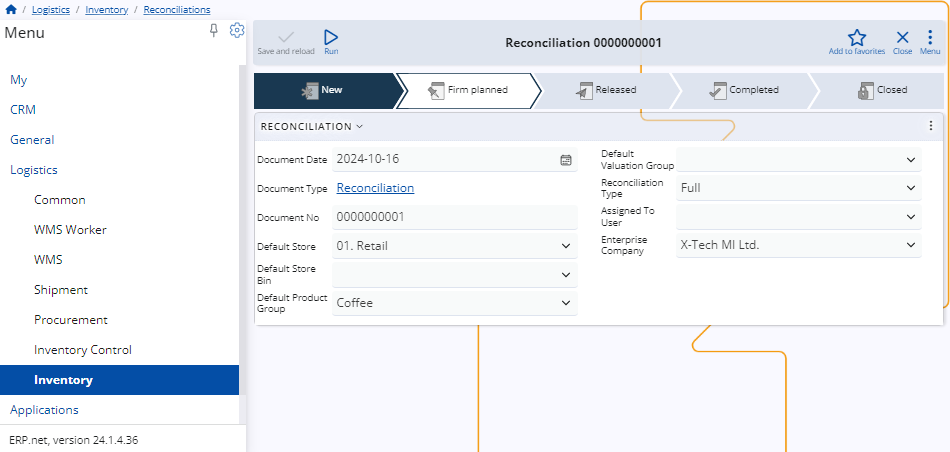
There are two types of reconciliation: Full and Partial.
Depending on which one you choose, you can determine what happens with counted and not counted product quantities.
Full - Products that are not counted are considered missing and will get a quantity of "0" assigned.
Partial - Products that are not counted are not reconciled and their availability will remain the same.
Important
If the Reconciliation Type is Full and a Default Product Group is assigned, uncounted quantities will be set to "0" only for products from that group.

Note
For a reconciliation to be recognized in Planned Reconcile, its state needs to Planned or Firm planned.
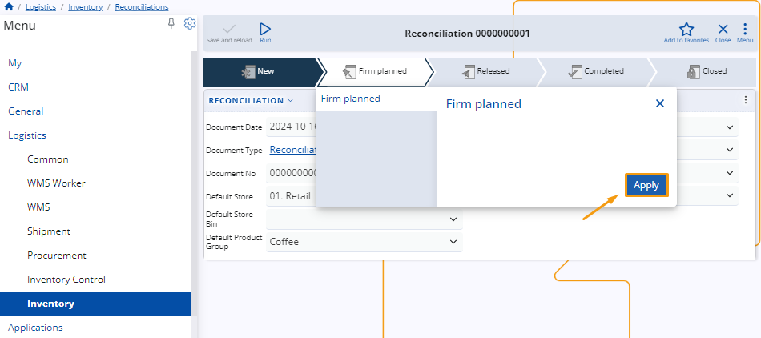
Overview
When you access Planned Reconcile, it will load a list of existing reconciliations filtered by the following criteria:
Their Enterprise Company and Enterprise Company Location are the ones the user is currently logged into.
All of them have a Default Store equivalent to the one selected for Inventory Control.
Each document's Date is no older than seven days prior to the current day.
Documents not matching these conditions will not be visualized.
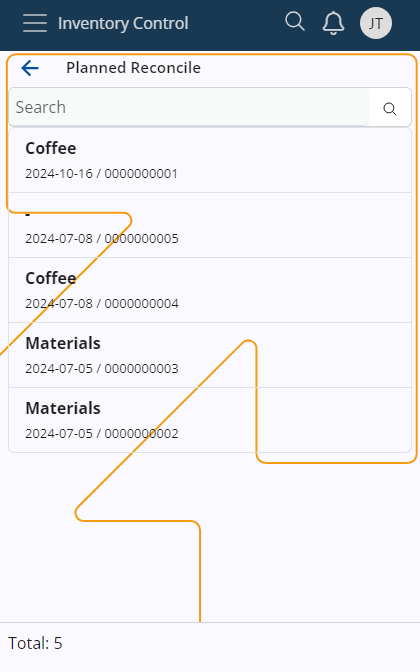
Note
If a reconciliation has a Default Product Group assigned, it will be named by it. If not, its name will be replaced by a dash.
Planned Reconcile is composed of three tabs:
- Availability
- Counted
- Info
Availability
This is where all of your store products are listed, together with their currently available quantities.
If the reconciliation has a Default Product Group assigned, only products belonging to that group will be shown.
In that case, attempting to scan a product from another product group will result in an error being thrown.
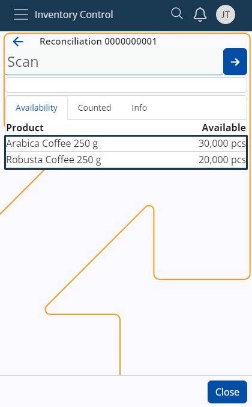
Counted
Here, you can find how many quantities of the products have been counted.
Each count operation will have its own line, and the newest one will be positioned at the top.
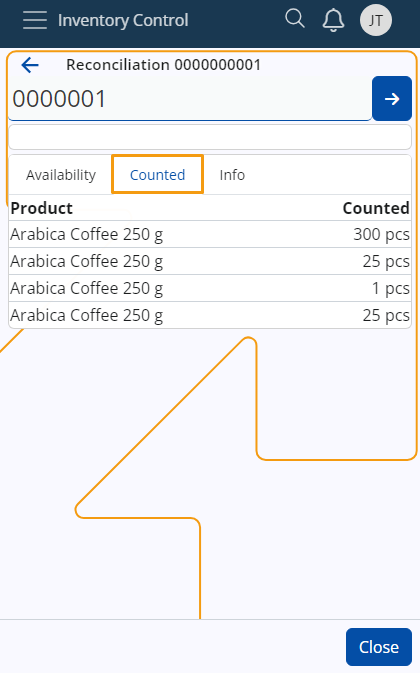
Info
This tab includes details about the products, including additional codes, if present, as well as the total counted quantities up to this moment and the ability to delete them. If you tap on a product from the Availability tab, you'll be shown further information about it here.
All registered counts feature the date and time when they occured, and can be individually deleted.
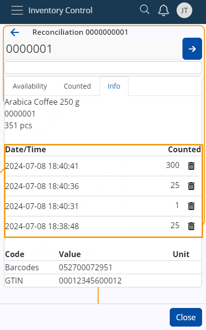
Scanning
In order to count quantities of products in Planned Reconcile, you need to use the Scan field.
It lets you quickly insert the instances of a product you want to count either manually or through barcode commands.
If you're unfamiliar with the process of scanning a product and require assistance, refer to our Inventory Control overview.
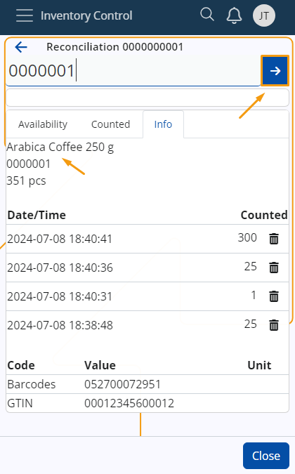
Common features
Just like in Quick Reconcile, you can:
scan product quantities higher than the currently available ones
introduce product quantities that haven't been previously counted
Zero counts
You can count zero quantities of products as many times as needed without changing the total counted quantity up to this moment.
This will result in new lines being created.
If the only count is "0", then the quantity of the product will be zero in the final reconciliation document.
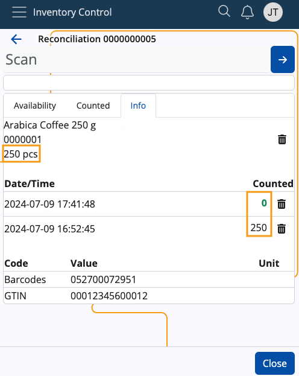
Note
If you leave Planned Reconcile in the middle of counting, your progress will be saved.
This applies even if you begin other operations within Inventory Control.
Parallel counting
Multiple workers can simultaneously count product quantities for the same reconciliation.
Once another worker logs in, they can start counting their own counts within the same document.
This is independent from previously started counts - every user will see only the quantities that they have counted.
Calculate reconciliation based on the counts
Once you are done counting product quantities, click Close. This will bring you back to the main Inventory Control application.
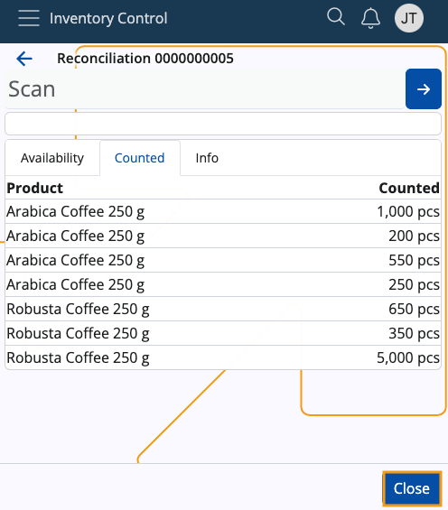
Store managers responsible for completing the reconciliation procedure need to navigate to the respective reconciliation within the Inventory module.
Inside, the Counts panel will have reflected all counted instances of the products, revealing further information about each, such as:
Creation Time Utc
Creation User
Product
Quantity
Note
Here, the manager will see all counted quantities from different users.
These quantities can be edited manually from here, if needed.
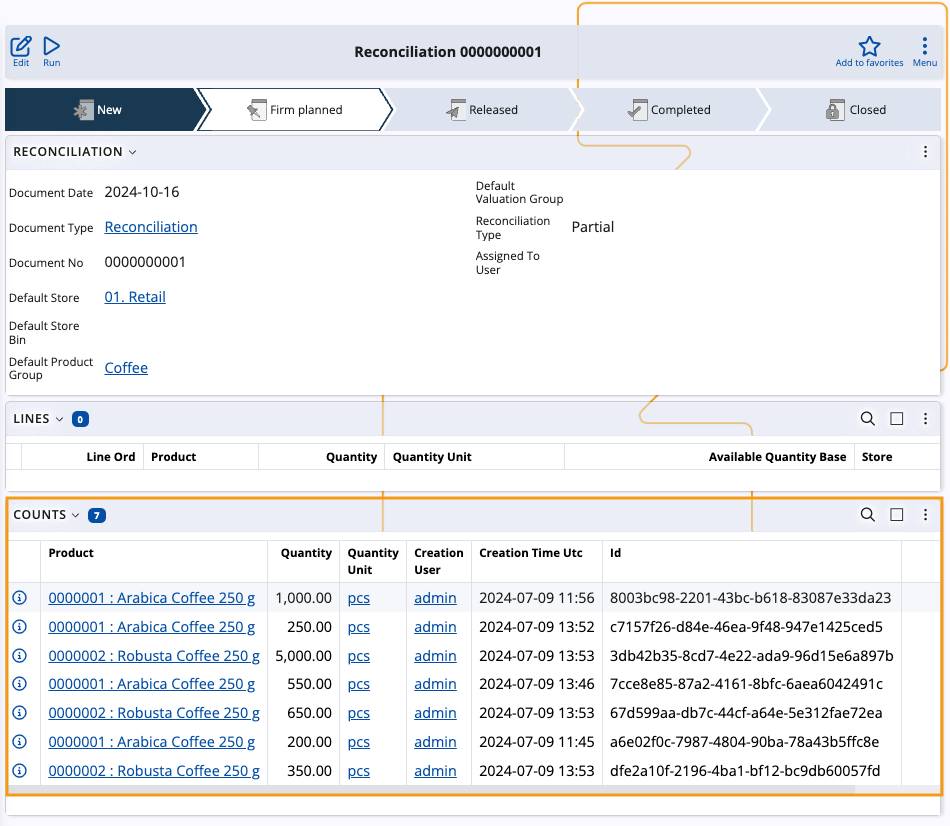
Using a UI function, you can consolidate individual quantity counts from the Counts panel into summarized lines in the Lines panel.
This ensures that products counted in the same store are automatically summed up or represented by a zero quantity, depending on the selected reconciliation type (Partial or Full).
For more information, please refer to Calculate reconciliation, based on the counts.
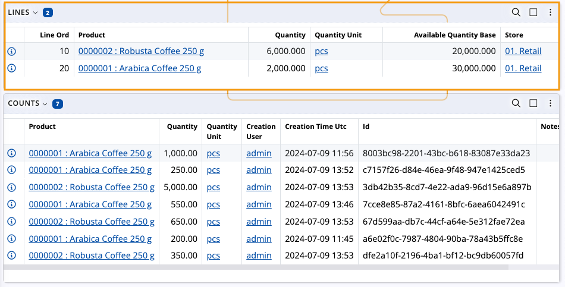
Note
The screenshots taken for this article are from v24 of the platform.